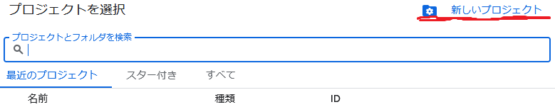

はじめに
DVCはデータのバージョン管理ツールで、GitHubの容量制限（100MiB）を超えるデータをGoogle Driveなどの外部ストレージで管理できます。
DVCでGoogle Driveをリモートストレージとして使う場合、認証方法には主にOAuthとサービスアカウントの2つがあります。
| OAuth | サービスアカウント | |
|---|---|---|
| 設定の手軽さ | やや複雑 | シンプル |
| トークン管理 | 定期的に再認証が必要 | 不要（キーファイルで認証） |
| 共有のしやすさ | 各自が認証を行う | キーファイルを共有するだけ |
本記事ではサービスアカウントを使った方法を解説します。
開発コンテナでの利用を想定していますが、それ以外の環境でも同様の手順で設定できます。開発コンテナの環境構築についてはこちらの記事を参考にしてください。
前提条件
以下がインストールされていることを前提とします。
- Python（pipが使える状態）
- Git
DVCとGoogle Drive用のパッケージをインストールしてください。
Terminal
pip install dvc dvc-gdriveサービスアカウントの作成
Google Cloudのサービスアカウントは、人ではなくアプリケーションがGoogle APIにアクセスするための仕組みです。DVCがGoogle Driveにアクセスするために使用します。
- Google Cloud Consoleへアクセス
- 画面上部のボックスからプロジェクトを作成
- 左上にGoogle Cloudと書いてある部分の右です。
- 出てくるウィンドウの右上から作れます。

- 画面左のメニューから「IAMと管理」を選択
- 左にメニューがない場合は左上の3本線から開けます。
- サイドバーの真ん中上あたりから「サービスアカウント」を選択
- 画面上部の「サービスアカウントを作成」へ進む
- 任意の名前と説明を入力し、完了を押下
- 権限のところはスキップで構いません。

- メールの列に書いてある長いメールアドレスをコピーしておく
- 後ほどGoogle Driveのフォルダにこのアドレスを共有します。
- 作成したサービスアカウントの一番右にある「操作」から「鍵を管理」を選択
- 長いメールアドレスの右側にある点々の部分です。
- 「キーを追加」→「新しい鍵を作成」→「JSON」を選択し、作成へ進む
- ファイルとして保存されるので、作業ディレクトリの
.secretsフォルダに保存する.secretsフォルダがなければ作成してください。- ファイル名は
key.jsonなどわかりやすいもので構いません。
Google Driveの設定
- Google Driveの任意の場所にデータ保管用のフォルダを作成
- フォルダの共有設定から、先ほどコピーしたサービスアカウントのメールアドレスを貼り付け、「編集者」権限で共有

- フォルダのIDをコピー
- IDは、ドライブでフォルダを開いたときのURLで、最後のスラッシュ（~/folders/）より右側の部分です。
DVCの初期化とリモート設定
ターミナルで以下のコマンドを順番に実行します。
リモートの追加
フォルダIDの部分を、先ほどコピーしたIDに置き換えてください。
Terminal
dvc init && dvc remote add -d myremote gdrive://[Google DriveのフォルダID]サービスアカウントの有効化
Terminal
dvc remote modify myremote gdrive_use_service_account trueキーファイルのパスを設定
--localを付けることで、この設定は.dvc/config.localに保存され、Gitには追跡されません。フォルダ名やファイル名を変更した場合は、適宜修正してください。
Terminal
dvc remote modify myremote --local \
gdrive_service_account_json_file_path .secrets/key.jsonセキュリティ設定
.secretsフォルダにはサービスアカウントのキーファイルが含まれています。これは機密情報なので、必ず.gitignoreに追記してGitの追跡対象から外してください。
.gitignore
/.secrets/これで.secretsフォルダの中身がGitにコミットされることはありません。
データの追加とプッシュ
以上で設定は完了です。あとはデータを管理していきましょう。
- ワーキングディレクトリに
dataフォルダを作成し、データを追加 - DVCにデータを登録
Terminal
dvc add data/- Google Driveにプッシュ
Terminal
dvc push- データをダウンロードしたい場合
Terminal
dvc pull共同作業者の設定
共同研究で他のメンバーとデータを共有する場合、以下の手順が必要です。
キーファイルの共有
.secretsフォルダはGitで追跡されないため、クローンしただけでは含まれません。キーファイルはメールやチャットなど別の手段で共有し、ワーキングディレクトリに.secrets/key.jsonとして配置してもらってください。
DVCの設定
共同作業者は以下のコマンドを順番に実行して、リモートの設定を行います。
Terminal
dvc remote modify myremote gdrive_use_service_account trueTerminal
dvc remote modify myremote --local \
gdrive_service_account_json_file_path .secrets/key.jsonこれにより、.dvc/config.localに以下のような内容が書き込まれます。
['remote "myremote"']
gdrive_service_account_json_file_path = ../.secrets/key.jsonパスが../.secrets/key.jsonとなるのは、.dvc/config.localから見た相対パスだからです。.dvc/config.localもGitで追跡されないため、各自が設定する必要があります。
設定が完了したら、dvc pullでデータをダウンロードできます。
Terminal
dvc pullおわりに
サービスアカウントを使ったDVCの設定方法を紹介しました。OAuthと比べてトークンの再認証が不要になるため、運用面でのストレスが軽減されます。
何かあればコメントでお知らせください。